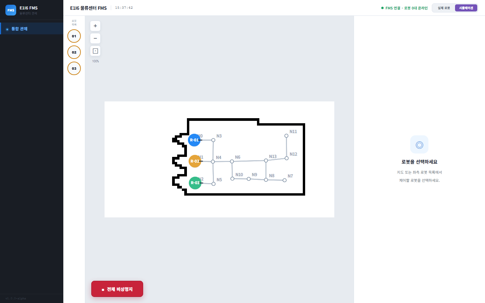
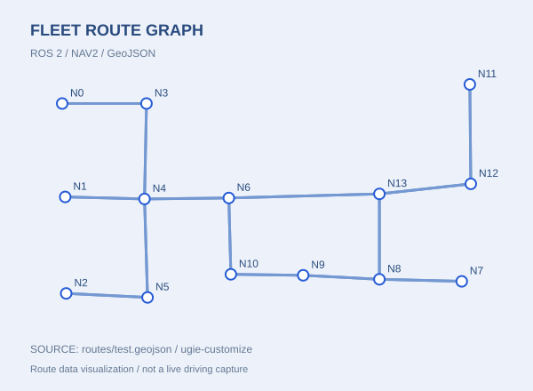

Robot Communication
- ROS 2와 Zenoh 통신 환경 구성
- 로봇별 연결 상태와 명령 관리
- Mock Robot 기반 통신 시험
01 - MULTI-ROBOT - FMS
Zenoh와 MQTT로 이동 로봇과 로봇팔의 작업을 연결하는 물류 관제 시스템
WHAT I DID
PROJECT IMAGES

맵에서 로봇의 위치와 상태를 확인하는 관제 화면

작업 지점을 연결해 로봇의 이동 경로를 구성한 그래프
SYSTEM FLOW
작업 요청
작업과 상태 관리
로봇 통신
주행과 Pickup
로봇팔 작업
PROBLEM SOLVING
실환경 주행에서 LiDAR 데이터 지연으로 Nav2 센서 처리 경고가 발생했습니다.
Main PC와 로봇의 시간을 Chrony로 동기화했습니다. 센서 수신 상태를 확인해 허용 시간을 조정했습니다.
실로봇 주행에서 센서 데이터 수신 흐름을 다시 확인했습니다.